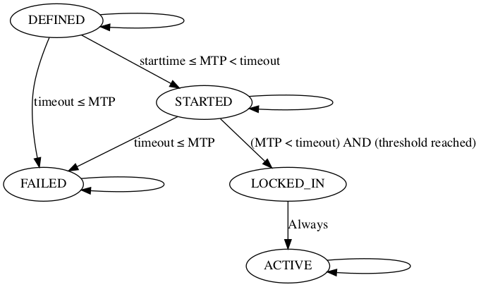

BIP 9
Abstract
This document specifies a proposed change to the semantics of the ‘version’ field in Bitcoin blocks, allowing multiple backward-compatible changes (further called “soft forks”) to be deployed in parallel. It relies on interpreting the version field as a bit vector, where each bit can be used to track an independent change. These are tallied each retarget period. Once the consensus change succeeds or times out, there is a “fallow” pause after which the bit can be reused for later changes.
Motivation
BIP 34 introduced a mechanism for doing soft-forking changes without a predefined flag timestamp (or flag block height), instead relying on measuring miner support indicated by a higher version number in block headers. As it relies on comparing version numbers as integers however, it only supports one single change being rolled out at once, requiring coordination between proposals, and does not allow for permanent rejection: as long as one soft fork is not fully rolled out, no future one can be scheduled.
In addition, BIP 34 made the integer comparison (nVersion >= 2) a consensus rule after its 95% threshold was reached, removing 231+2 values from the set of valid version numbers (all negative numbers, as nVersion is interpreted as a signed integer, as well as 0 and 1). This indicates another downside this approach: every upgrade permanently restricts the set of allowed nVersion field values. This approach was later reused in BIP 66 and BIP 65, which further removed nVersions 2 and 3 as valid options. As will be shown further, this is unnecessary.
Specification
Each soft fork deployment is specified by the following per-chain parameters (further elaborated below):
- The name specifies a very brief description of the soft fork, reasonable for use as an identifier. For deployments described in a single BIP, it is recommended to use the name “bipN” where N is the appropriate BIP number.
- The bit determines which bit in the nVersion field of the block is to be used to signal the soft fork lock-in and activation. It is chosen from the set {0,1,2,…,28}.
- The starttime specifies a minimum median time past of a block at which the bit gains its meaning.
- The timeout specifies a time at which the deployment is considered failed. If the median time past of a block >= timeout and the soft fork has not yet locked in (including this block’s bit state), the deployment is considered failed on all descendants of the block.
Selection guidelines
The following guidelines are suggested for selecting these parameters for a soft fork:
- name should be selected such that no two softforks, concurrent or otherwise, ever use the same name.
- bit should be selected such that no two concurrent softforks use the same bit.
- starttime should be set to some date in the future, approximately one month after a software release date including the soft fork. This allows for some release delays, while preventing triggers as a result of parties running pre-release software.
- timeout should be 1 year (31536000 seconds) after starttime.
A later deployment using the same bit is possible as long as the starttime is after the previous one’s timeout or activation, but it is discouraged until necessary, and even then recommended to have a pause in between to detect buggy software.
States
With each block and soft fork, we associate a deployment state. The possible states are:
- DEFINED is the first state that each soft fork starts out as. The genesis block is by definition in this state for each deployment.
- STARTED for blocks past the starttime.
- LOCKED_IN for one retarget period after the first retarget period with STARTED blocks of which at least threshold have the associated bit set in nVersion.
- ACTIVE for all blocks after the LOCKED_IN retarget period.
- FAILED for one retarget period past the timeout time, if LOCKED_IN was not reached.
Bit flags
The nVersion block header field is to be interpreted as a 32-bit little-endian integer (as present), and bits are selected within this integer as values (1 << N) where N is the bit number.
Blocks in the STARTED state get an nVersion whose bit position bit is set to 1. The top 3 bits of such blocks must be 001, so the range of actually possible nVersion values is [0x20000000…0x3FFFFFFF], inclusive.
Due to the constraints set by BIP 34, BIP 66 and BIP 65, we only have 0x7FFFFFFB possible nVersion values available. This restricts us to at most 30 independent deployments. By restricting the top 3 bits to 001 we get 29 out of those for the purposes of this proposal, and support two future upgrades for different mechanisms (top bits 010 and 011). When a block nVersion does not have top bits 001, it is treated as if all bits are 0 for the purposes of deployments.
Miners should continue setting the bit in LOCKED_IN phase so uptake is visible, though this has no effect on consensus rules.
New consensus rules
The new consensus rules for each soft fork are enforced for each block that has ACTIVE state.
State transitions

</img>The genesis block has state DEFINED for each deployment, by definition.
State GetStateForBlock(block) {
if (block.height == 0) {
return DEFINED;
}
All blocks within a retarget period have the same state. This means that if floor(block1.height / 2016) = floor(block2.height / 2016), they are guaranteed to have the same state for every deployment.
if ((block.height % 2016) != 0) {
return GetStateForBlock(block.parent);
}
Otherwise, the next state depends on the previous state:
switch (GetStateForBlock(GetAncestorAtHeight(block, block.height - 2016))) {
We remain in the initial state until either we pass the start time or the timeout. GetMedianTimePast in the code below refers to the median nTime of a block and its 10 predecessors. The expression GetMedianTimePast(block.parent) is referred to as MTP in the diagram above, and is treated as a monotonic clock defined by the chain.
case DEFINED:
if (GetMedianTimePast(block.parent) >= timeout) {
return FAILED;
}
if (GetMedianTimePast(block.parent) >= starttime) {
return STARTED;
}
return DEFINED;
After a period in the STARTED state, if we’re past the timeout, we switch to FAILED. If not, we tally the bits set, and transition to LOCKED_IN if a sufficient number of blocks in the past period set the deployment bit in their version numbers. The threshold is ≥1916 blocks (95% of 2016), or ≥1512 for testnet (75% of 2016). The transition to FAILED takes precedence, as otherwise an ambiguity can arise. There could be two non-overlapping deployments on the same bit, where the first one transitions to LOCKED_IN while the other one simultaneously transitions to STARTED, which would mean both would demand setting the bit.
Note that a block’s state never depends on its own nVersion; only on that of its ancestors.
case STARTED:
if (GetMedianTimePast(block.parent) >= timeout) {
return FAILED;
}
int count = 0;
walk = block;
for (i = 0; i < 2016; i++) {
walk = walk.parent;
if (walk.nVersion & 0xE0000000 == 0x20000000 && (walk.nVersion >> bit) & 1 == 1) {
count++;
}
}
if (count >= threshold) {
return LOCKED_IN;
}
return STARTED;
After a retarget period of LOCKED_IN, we automatically transition to ACTIVE.
case LOCKED_IN:
return ACTIVE;
And ACTIVE and FAILED are terminal states, which a deployment stays in once they’re reached.
case ACTIVE:
return ACTIVE;
case FAILED:
return FAILED;
}
}
Implementation It should be noted that the states are maintained along block chain branches, but may need recomputation when a reorganization happens.
Given that the state for a specific block/deployment combination is completely determined by its ancestry before the current retarget period (i.e. up to and including its ancestor with height block.height - 1 - (block.height % 2016)), it is possible to implement the mechanism above efficiently and safely by caching the resulting state of every multiple-of-2016 block, indexed by its parent.
Warning mechanism
To support upgrade warnings, an extra “unknown upgrade” is tracked, using the “implicit bit” mask = (block.nVersion & ~expectedVersion) != 0. Mask will be non-zero whenever an unexpected bit is set in nVersion. Whenever LOCKED_IN for the unknown upgrade is detected, the software should warn loudly about the upcoming soft fork. It should warn even more loudly after the next retarget period (when the unknown upgrade is in the ACTIVE state).
getblocktemplate changes
The template request Object is extended to include a new item:
|
template request |
|||
|---|---|---|---|
|
Key |
Required |
Type |
Description |
|
rules |
No |
Array of Strings |
list of supported softfork deployments, by name |
The template Object is also extended:
|
template |
|||
|---|---|---|---|
|
Key |
Required |
Type |
Description |
|
rules |
Yes |
Array of Strings |
list of softfork deployments, by name, that are active state |
|
vbavailable |
Yes |
Object |
set of pending, supported softfork deployments; each uses the softfork name as the key, and the softfork bit as its value |
|
vbrequired |
No |
Number |
bit mask of softfork deployment version bits the server requires enabled in submissions |
The “version” key of the template is retained, and used to indicate the server’s preference of deployments. If versionbits is being used, “version” MUST be within the versionbits range of [0x20000000…0x3FFFFFFF]. Miners MAY clear or set bits in the block version WITHOUT any special “mutable” key, provided they are listed among the template’s “vbavailable” and (when clearing is desired) NOT included as a bit in “vbrequired”.
Softfork deployment names listed in “rules” or as keys in “vbavailable” may be prefixed by a ‘!’ character. Without this prefix, GBT clients may assume the rule will not impact usage of the template as-is; typical examples of this would be when previously valid transactions cease to be valid, such as BIPs 16, 65, 66, 68, 112, and 113. If a client does not understand a rule without the prefix, it may use it unmodified for mining. On the other hand, when this prefix is used, it indicates a more subtle change to the block structure or generation transaction; examples of this would be BIP 34 (because it modifies coinbase construction) and 141 (since it modifies the txid hashing and adds a commitment to the generation transaction). A client that does not understand a rule prefixed by ‘!’ must not attempt to process the template, and must not attempt to use it for mining even unmodified.
Support for future changes
The mechanism described above is very generic, and variations are possible for future soft forks. Here are some ideas that can be taken into account.
Modified thresholds The 1916 threshold (based on BIP 34’s 95%) does not have to be maintained for eternity, but changes should take the effect on the warning system into account. In particular, having a lock-in threshold that is incompatible with the one used for the warning system may have long-term effects, as the warning system cannot rely on a permanently detectable condition anymore.
Conflicting soft forks At some point, two mutually exclusive soft forks may be proposed. The naive way to deal with this is to never create software that implements both, but that is making a bet that at least one side is guaranteed to lose. Better would be to encode “soft fork X cannot be locked-in” as consensus rule for the conflicting soft fork - allowing software that supports both, but can never trigger conflicting changes.
Multi-stage soft forks Soft forks right now are typically treated as booleans: they go from an inactive to an active state in blocks. Perhaps at some point there is demand for a change that has a larger number of stages, with additional validation rules that get enabled one by one. The above mechanism can be adapted to support this, by interpreting a combination of bits as an integer, rather than as isolated bits. The warning system is compatible with this, as (nVersion & ~nExpectedVersion) will always be non-zero for increasing integers.
Rationale
The failure timeout allows eventual reuse of bits even if a soft fork was never activated, so it’s clear that the new use of the bit refers to a new BIP. It’s deliberately very coarse-grained, to take into account reasonable development and deployment delays. There are unlikely to be enough failed proposals to cause a bit shortage.
The fallow period at the conclusion of a soft fork attempt allows some detection of buggy clients, and allows time for warnings and software upgrades for successful soft forks.
Deployments
A living list of deployment proposals can be found here.
Copyright
This document is placed in the public domain.
BIP: 8
Title: Version bits with lock-in by height
Authors: Shaolin Fry <shaolinfry@protonmail.ch>
Luke Dashjr <luke+bip@dashjr.org>
Status: Complete
Type: Informational
Assigned: 2017-02-01
License: BSD-3-Clause OR CC0-1.0
Version: 1.0.0